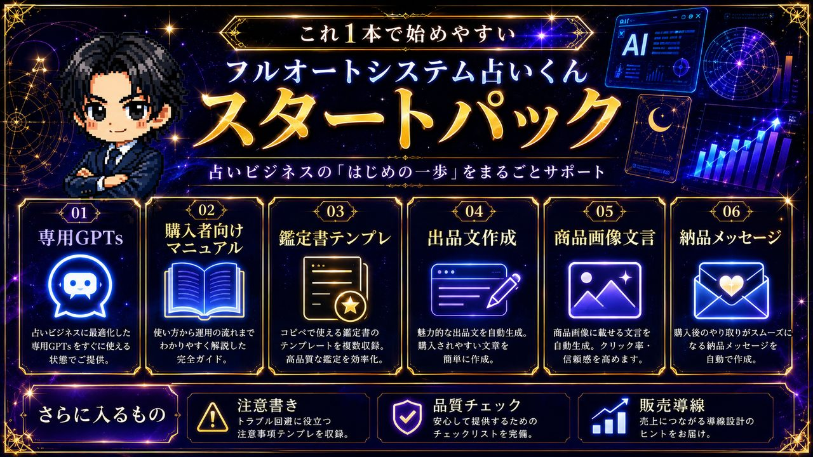
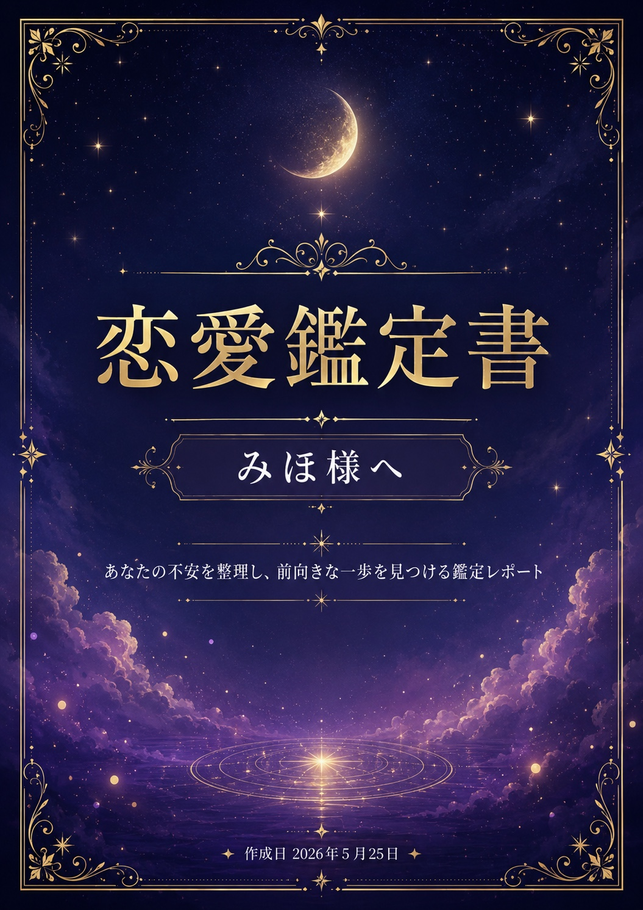
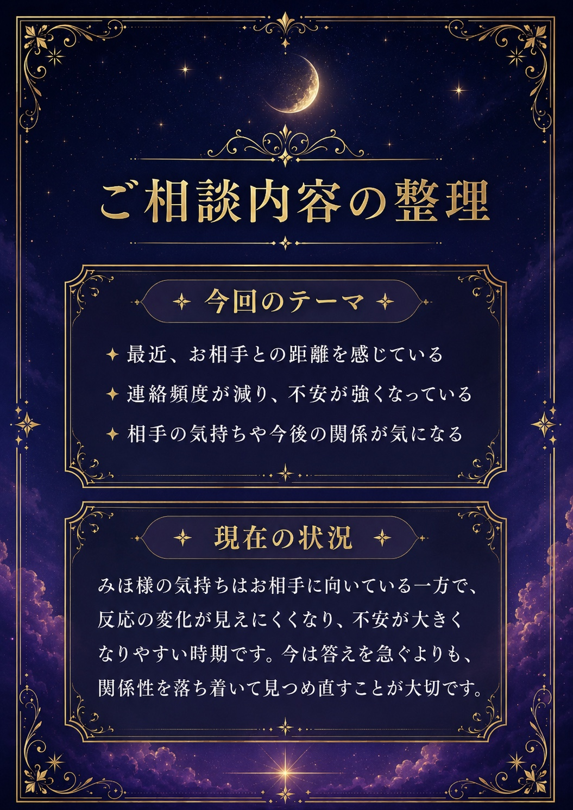
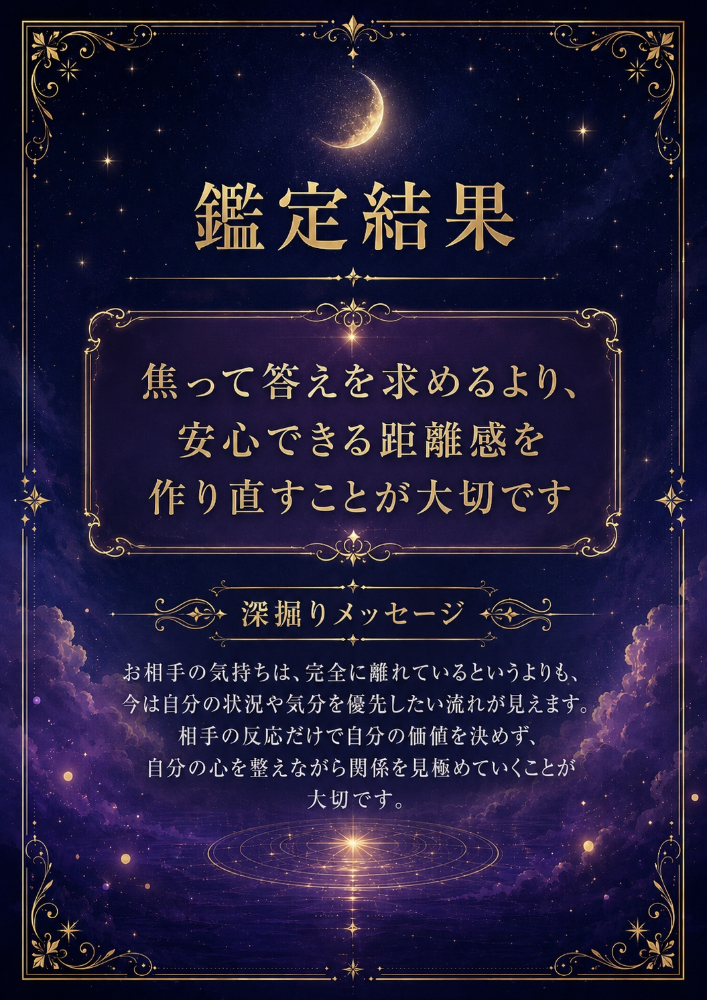
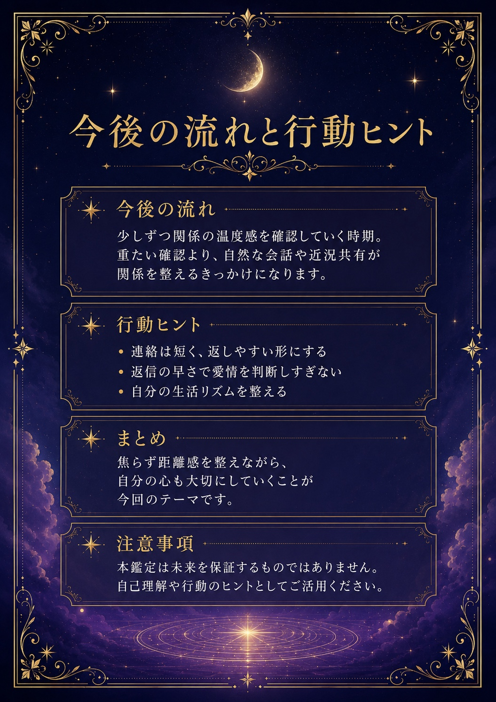
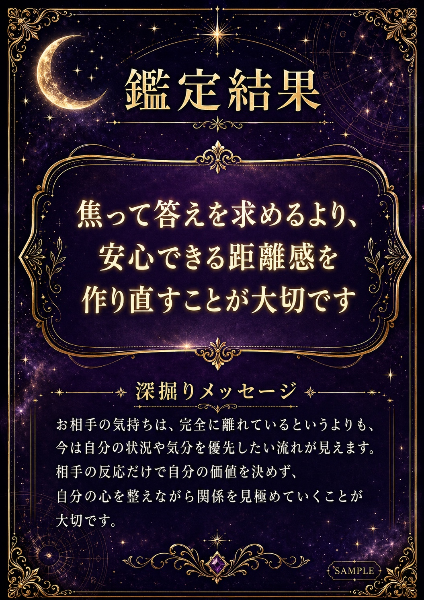
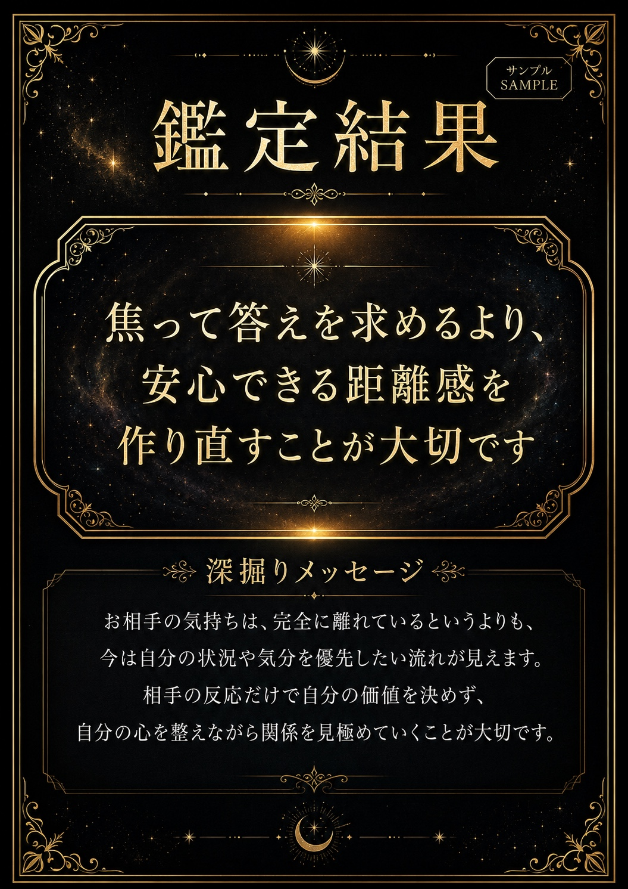
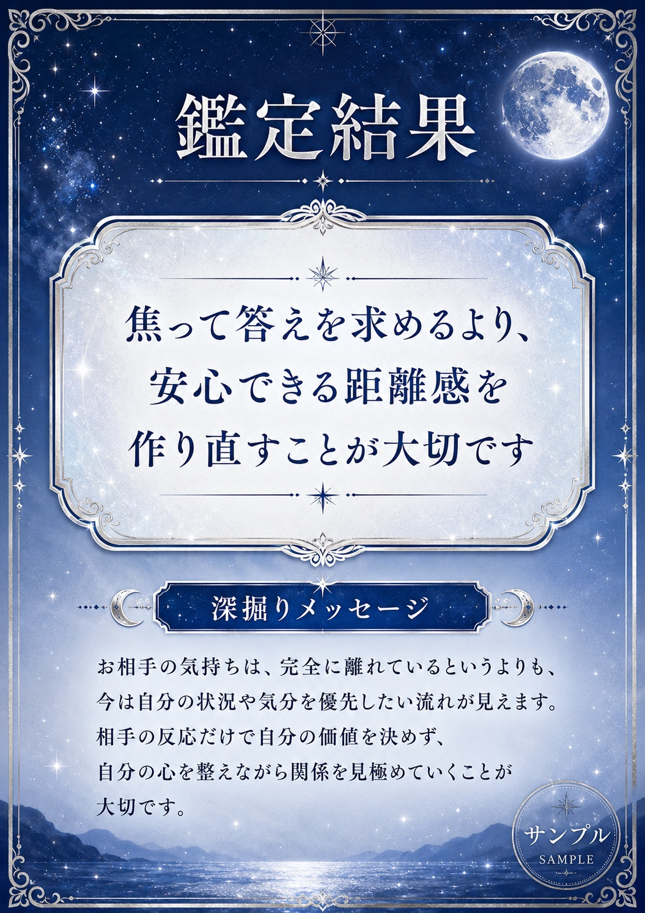
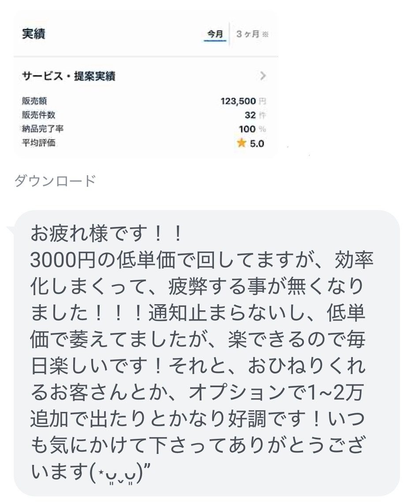

追加再販枠 / 10名限定 / 枠が埋まり次第終了
今だけモニター価格で導入できる、占い鑑定書販売のフルオート化システム
ココナラで占い鑑定書販売を始めたい人向けに、出品ページ・商品画像文言・鑑定書本文・鑑定書画像・PDF納品用整形・納品文・注意書きまでを一気に整える販売者向けスタートパックです。通常価格129,800円の内容を、今回は導入モニターとして先着10名のみ29,800円で案内します。
初回10枠は完売しました。追加再販枠は残り3/15枠です。必要な方は内容確認後、お申し込みください。
※本ページは商品の内容説明です。収益や販売成果を保証するものではありません。モニター枠は、使用感や改善点の共有にご協力いただける方向けの特別価格です。
申し込みはこちら
追加再販枠は10名限定です。
通常価格129,800円のところ、使用感・改善点の共有にご協力いただける方限定で、追加再販特別価格29,800円で案内します。枠が埋まり次第、この価格での案内は終了予定です。
※価格・募集枠はこのページ掲載時点の案内です。成果や収益を保証するものではありません。
まず伝えたいこと
占いで止まる理由は、占い知識だけではありません。
ココナラで占い商品を出そうと思っても、初心者はかなり高い確率で出品前に止まります。
何を売ればいいのか分からない。タイトルが決まらない。商品画像が作れない。説明文が書けない。注文が来たあと、何を聞けばいいのか分からない。鑑定書をどう作ればいいのか分からない。納品文や注意書きも分からない。
つまり、足りないのは「占いの才能」だけではなく、出品から納品までの型です。
恋愛、復縁、相手の気持ち、仕事運など、最初のジャンル選びで止まる。
タイトル、説明文、購入後の流れ、FAQ、注意事項をどう並べるか分からない。
相談内容をどう整理し、どんな構成で納品すればいいか迷う。
追加質問、オプション、リピート案内まで自然につなげられない。

商品の本質
フルオートシステム占いくんは、
占い師になる教材ではなく、販売作業を整えるAI補助GPTsです。
「AIで占います」だけの商品は、どうしても怪しく見えやすいです。大事なのは、AIに未来を断定させることではありません。
AIに任せるべきなのは、相談内容の整理、鑑定書の構成、読みやすい文章化、鑑定書画像の作成、PDF用の整形、商品画像文言、出品ページ、購入後メッセージ、納品メッセージ、注意書き、品質チェックといった販売作業です。
今回のシステムは、そこを一式で進めやすくするために設計しています。

使い方
注文が来たあとも、毎回ゼロから悩まない。
出品して終わりではなく、受注後の流れまで先に作っておく。ここまで整えることで、初心者でも動きやすくなります。
恋愛、復縁、相手の気持ちなど、需要が見えやすいテーマから決める。
タイトル、サービス説明、購入後の流れ、注意事項を整える。
世界観と訴求を決め、購入者がイメージしやすい画像文言を作る。
相談内容をもとに、読みやすい構成で鑑定書本文を作る。
ページごとの鑑定書画像を作り、顧客に渡しやすい形に整える。
実際の出力イメージ
占いくんで作れる鑑定書サンプルを、そのまま掲載しています。
「どこまで作れるのか分からない」を減らすために、実際のイメージが伝わるサンプルを載せています。購入後は、相談内容に合わせてこのような鑑定書画像やPDF納品用の内容を整えやすくなります。
表紙・相談内容整理・鑑定結果・今後の流れまで、ページ構成のイメージがすぐに掴めます。
黒金、高級感、夜空、恋愛向けピンクなど、テーマに合わせた雰囲気作りの参考になります。
LP上で実物サンプルを見せることで、購入後のイメージが明確になり、申込みの不安を下げやすくなります。
一部機能紹介
相談内容を受け取ったあと、本文作成 → 鑑定書画像化 → PDF納品用整形まで進めやすい設計です。
- 表紙つきの鑑定書デザインを作りやすい
- 相談内容整理・現状・鑑定結果・行動ヒントまで構成化しやすい
- 恋愛系・神秘系・高級感系などテイスト違いも見せやすい
- サンプルを商品ページに載せて、購入前の不安を下げやすい


購入者の不安や相談テーマを整理して、読みやすく見せる例。

要点を強く見せながら、深掘りメッセージも載せる例。

今後の流れ・行動ヒント・まとめ・注意事項まで整理する例。

高単価感や特別感を出したい商品に向きやすいテイスト。
柔らかく優しい雰囲気で、恋愛相談の世界観を作りやすい例。

神秘感と高級感を両立した印象で見せやすい例。

落ち着いた世界観や清潔感を出したい場合の例。
※掲載している画像はサンプルイメージです。実際の出力は、相談内容、鑑定ジャンル、ページ数、デザインテイストによって変わります。
導入モニターの声
超先行導入モニターの実績
実際に導入した方から、作業効率や販売導線についての報告が届いています。ここでは一部を紹介します。

※掲載している内容は導入モニターの一例であり、同様の成果や収益を保証するものではありません。販売状況は出品内容、価格、運用、改善、購入者対応などによって変動します。
なぜ今申し込むべきか
あとで整えようと思っている間に、出品までの一歩が遅れます。
このシステムの価値は、ただ文章を作ることではありません。占い鑑定書販売で止まりやすい「何を出すか」「どう見せるか」「どう納品するか」を、先に型として持てることです。
タイトル、説明文、画像文言、購入後の流れまで揃うので、最初の出品準備が進めやすくなります。
ヒアリング、鑑定書構成、納品メッセージ、注意事項まで型化できるので、注文後も迷いにくくなります。
鑑定書画像の完成イメージを見せられることで、商品内容が伝わりやすく、購入前の不安を下げやすくなります。
正式価格129,800円想定の内容を、今回は先着10名のみ29,800円で案内。早く導入するほど改善しながら使い始められます。
決断ポイント
「いつかやる」より、先に型を持って出品準備を進める。
今のうちに出品から納品までの流れを作っておきたい方は、LINEで【占いくん】と送ってください。
先行モニター募集
通常価格129,800円の内容を、先着10名のみ29,800円で募集します。
追加再販特別価格
使用感や改善点の共有にご協力いただける方限定で、先着10名のみ追加再販特別価格で案内します。枠が埋まり次第、通常価格へ戻す予定です。
- 専用GPTs本体
- 購入者向け完全活用マニュアル
- 鑑定書テンプレート
- 鑑定書画像生成・PDF整形の使い方
- 出品文・画像文言生成サポート
- 購入後・納品メッセージ生成
- 注意書き・品質チェック
- 出品から納品までの型化
申込方法
申し込みはこちら。LINEで【占いくん】と送るだけです。
リンク先のLINEを開き、メッセージで 占いくん と送ってください。追加再販枠の案内をお送りします。
今すぐLINEで【占いくん】と送るFAQ
よくある質問
占い知識がなくても使えますか？
専門的な占術を極める教材ではなく、占い鑑定書販売に必要な出品・鑑定書・納品文を整えやすくする補助システムです。占い知識ゼロでも、まずは型に沿って進めやすい構成にしています。
鑑定書の画像やPDFも作れますか？
鑑定書本文を作るだけでなく、ページごとの構成イメージや画像化しやすい形、PDF納品に進めやすい流れも含めて使える構成です。購入者向けマニュアルも付属します。
本当に自動で稼げますか？
収益を保証するものではありません。商品ページや納品の型を整え、作業を効率化しやすくするためのシステムです。実際の成果は出品内容、価格、改善、対応品質などによって変わります。
ココナラ以外でも使えますか？
基本はココナラでの占い鑑定書販売を想定していますが、商品説明文、ヒアリング、鑑定書構成、納品文といった考え方は他の販売導線にも応用できます。
追加再販枠はいつまでですか？
初回10枠は完売しました。追加再販枠も人数に達した場合は、予告なく終了する場合があります。
最後に
まずは、出品から納品までの型を持つことから。
ココナラで何を売るか迷っている人、AIを使って副業導線を作りたい人、占い鑑定書販売に興味がある人は、まず詳細を確認してみてください。